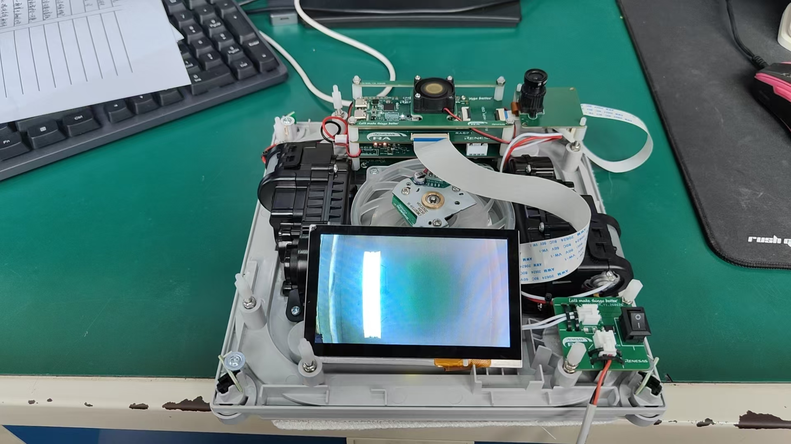
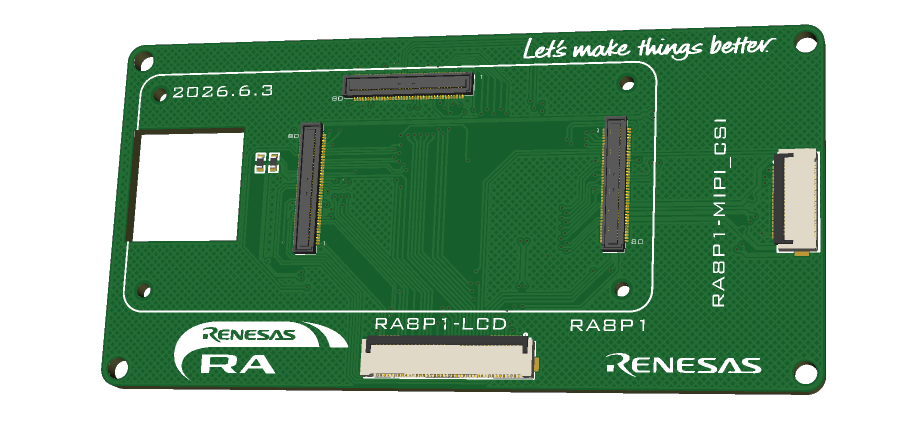
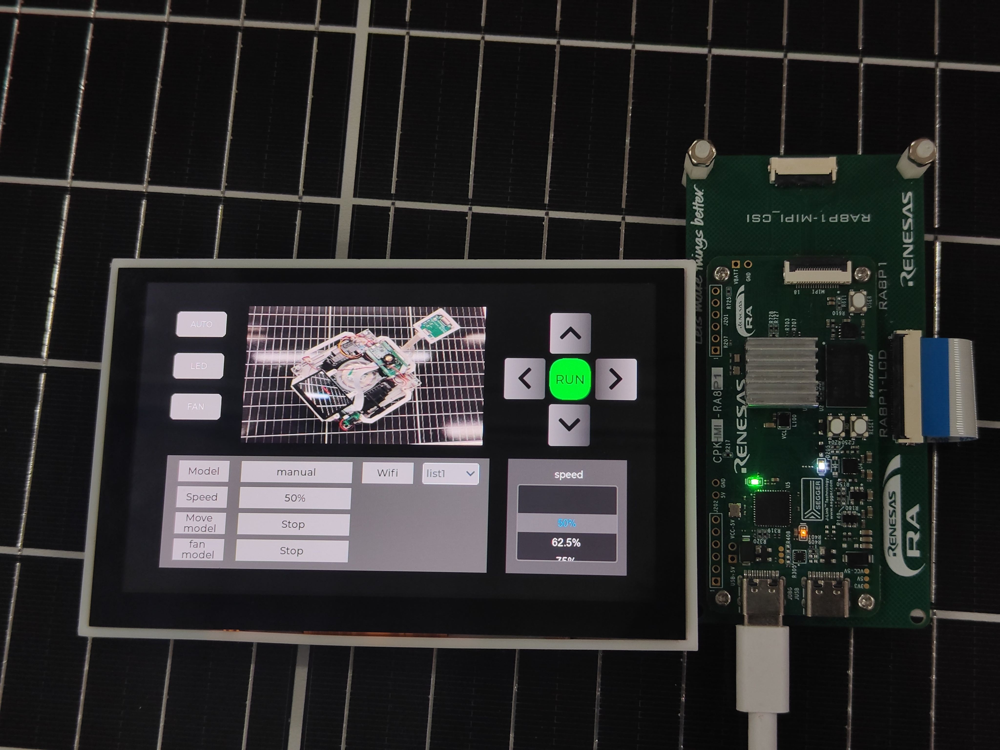

光伏板表面巡检
设备需要兼顾倾斜表面附着、移动和图像采集。

RENESAS CUP · PROJECT DEFENSE
面向光伏板表面作业的吸附移动、边缘识别、无线图传与远程控制一体化平台
01 · PROJECT OVERVIEW
以 RA8P1 为核心，把现场感知、缺陷识别、运动执行和远程交互组织成一个完整系统。
让一台吸附式巡检车完成感知、判断、执行与回传。
当前成果：双核车端与触控遥控终端已形成端到端功能链路。设备需要兼顾倾斜表面附着、移动和图像采集。
车端负责感知与执行，遥控端负责交互与图像显示。
YOLO 完成缺陷检测，ROI 状态机提供基础运动意图。
图像与控制分流，执行机构由 M33 统一管理。
02 · SYSTEM BLOCK DIAGRAM
控制指令、实时图像与缺陷结果的数据关系
人机交互 / 指令发送 / 图像显示
RA8P1 双核控制平台
缺陷图像接收 / 存储
OV5640 摄像头
M85 + Ethos-U55
M85 判断 / M33 执行
履带电机 + 负压风机
03 · HARDWARE BLOCK DIAGRAM
RA8P1 核心板与自研扩展底板位于中心，向两侧连接输入、通信和执行模块。
输入与感知
输出与执行



04 · HARDWARE MODELS
检测小车与遥控器是两个独立终端，分别展示总体结构和内部模块。
05 · SOFTWARE FLOW
每个方框对应现行线程或明确的数据交接点，完整展示从相机输入到车辆执行的调用链。
CPU0
06 · ALGORITHM FLOW
在软件总流程基础上，进一步展开 M85 侧的两条视觉处理路径。

07 · COMMUNICATION & CONTROL
分别处理控制、图像、跨核消息和检测结果，再由唯一执行路径驱动车辆。

遥控端实时图像与控制界面硬件 ACK，方向释放立即转换为停车命令。
NO_ACK 冗余，接收端重组并执行 CRC32 校验。
JPEG 走共享内存，导航意图走短消息。
M33 独占 Wi-Fi 状态机并上传检测 JPEG。
08 · KEY DESIGN SUMMARY
在硬件、软件和算法展开之后，归纳支撑系统稳定协作的四项设计。
M85 处理高吞吐视觉任务，M33 独占运动控制，降低视觉阻塞对执行路径的影响。
共享 JPEG 使用双槽与完成通知，在消费完成前不允许覆盖对应缓冲区。
手动和自动控制都写入单槽“最新命令”邮箱，再由 Vehicle Thread 统一执行。
导航意图超过 500 ms 不更新时停止车轮，避免旧命令持续驱动车辆。
09 · RESULTS & BOUNDARIES
10 · CONCLUSION
车端采集、识别、导航、执行与遥控端交互进入同一数据链路。
M85、M33 和 U55 分工明确，兼顾视觉吞吐与实时控制。
已验证能力与待整定项目分开陈述，为后续实车验收提供依据。
感谢各位评委老师，请批评指正